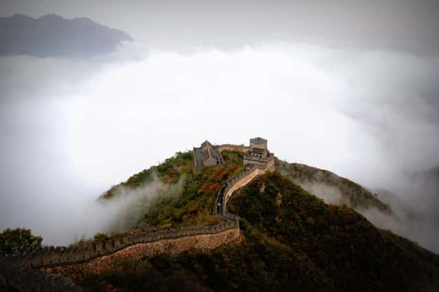

The Place I've been
In the winter, when I went it was chilly and foggy. Just the picture above (no I did not take the picture). I remember feels so small in such a big place and it was windy leaves blowing all over the place. When I went it was crowded and people were pushing each other to get the best pictures. Despite all of that, it was a fun experience being able to see a historical figure.